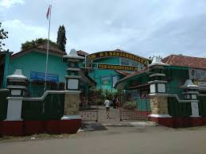
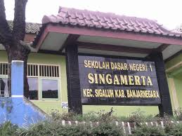
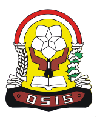
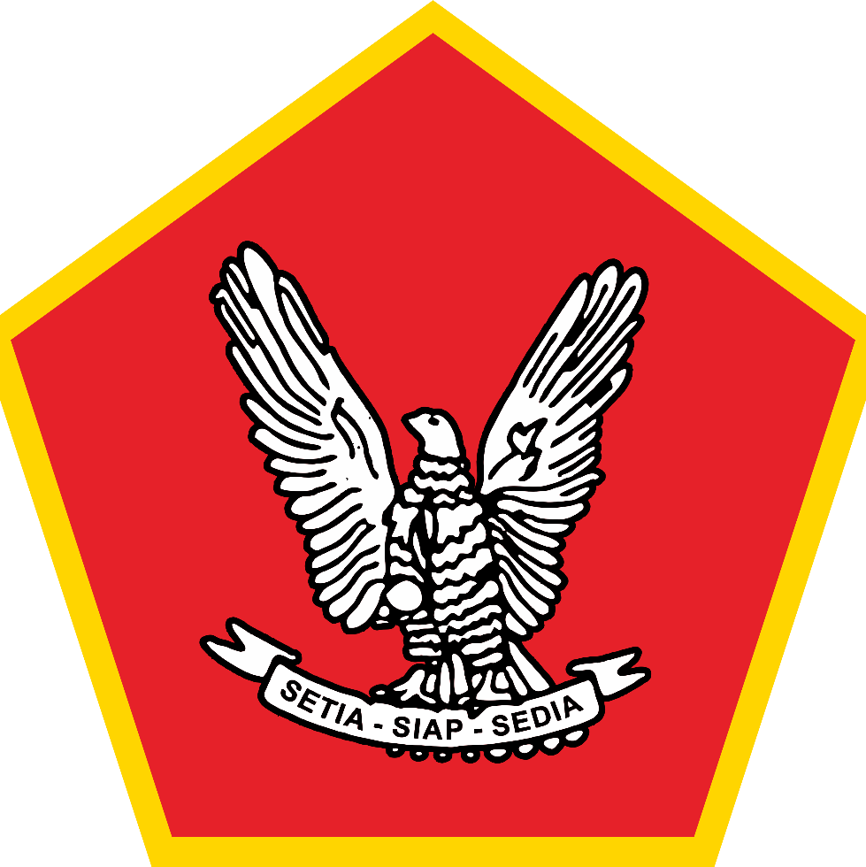
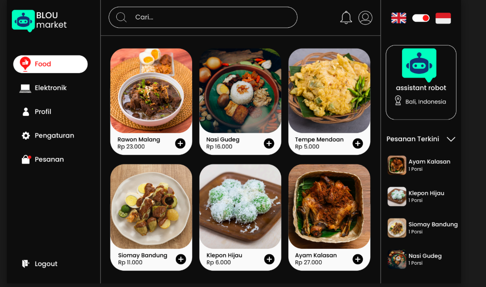
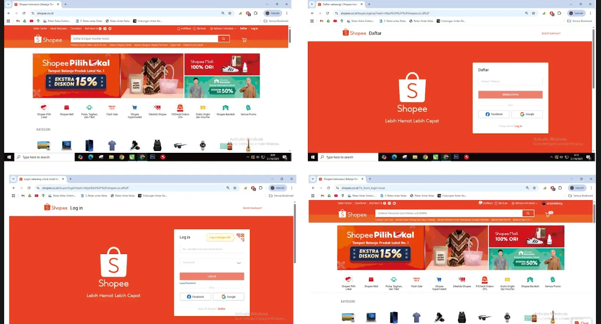
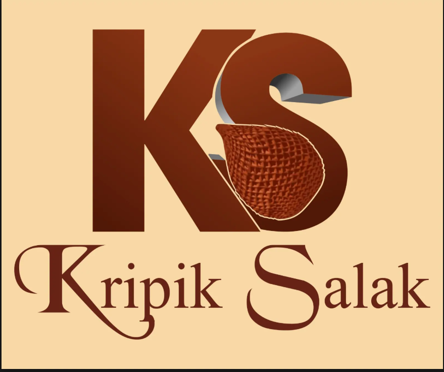

Nama Saya Gerend Putra Mahardika,Saya adalah seorang pelajar di bidang Rekayasa Perangkat Lunak (RPL) yang memiliki minat besar dalam dunia teknologi, khususnya pengembangan website.
Saat ini saya sedang mempelajari berbagai dasar pemrograman seperti HTML, CSS, dan Bootstrap untuk membuat tampilan website yang menarik dan responsif. Saya juga mulai belajar PHP untuk memahami bagaimana membangun website yang dinamis.
Saya dikenal sebagai pribadi yang mudah tersenyum, humoris, dan mampu menciptakan suasana yang menyenangkan saat bekerja dalam tim.



Saya merupakan siswa yang aktif berorganisasi sejak SMP melalui OSIS, yang memberikan banyak pengalaman dalam kerja sama tim, tanggung jawab, dan kepemimpinan.
Dalam Seksi Bidang Ketertiban, saya berperan dalam menjaga kedisiplinan dan ketertiban siswa di lingkungan sekolah.
Masa Bakti
Saya juga aktif dalam kegiatan Pramuka dan mencapai tingkat Pramuka Garuda, yang melatih saya menjadi pribadi disiplin dan mandiri.
Kegiatan meliputi kerja sama tim, kepemimpinan, dan kegiatan sosial.
Tingkat: Pramuka GarudaSaat ini saya masih dalam proses mengembangkan diri dan terus belajar untuk meraih berbagai prestasi di bidang akademik maupun non-akademik.

Web Minimalis Hitam dan Merah…
, UI-nya pakai konsep minimalis hitam-merah, ada menu
kategori, pencarian, dan daftar produk. UX-nya terlihat
sederhana karena ada fitur pencarian, pesanan terkini,
dan profil, sehingga pengguna lebih mudah bernavigasi.

Gambar ini nunjukin beberapa tampilan halaman website
Shopee di layar komputer. Ada empat bagian screenshot
yang digabung jadi satu.

Gambar ini adalah logo dengan tulisan besar “KS” di
bagian atas. Warna hurufnya coklat tua, senada sama
warna cemilan tradisional. Di dalam huruf S ada gambar
tekstur salak yang kelihatan khas banget, kayak kulit
salak yang bersisik. Jadi langsung nunjukin kalau
produknya berhubungan sama salak.